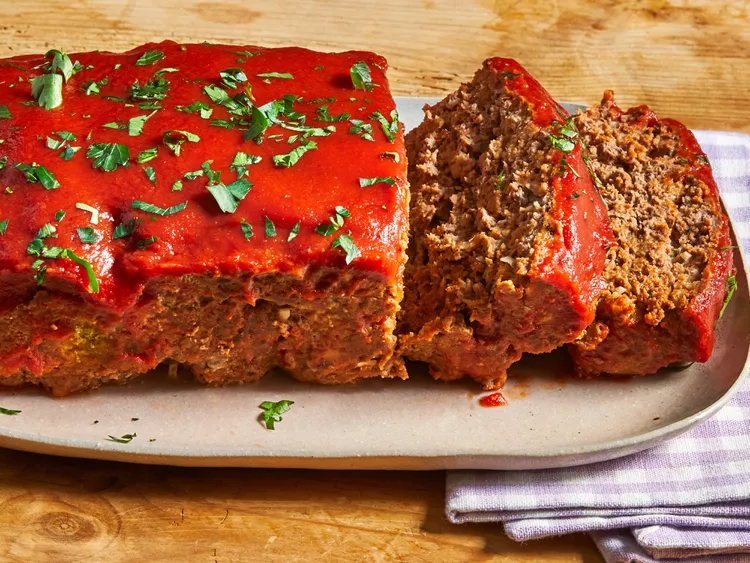

Meatloaf

It's like a loaf of bread but made out of meat.
Ingredients
- Ground beef
- Minced onion
- Garlic, crushed
- Bread crumbs
- Some tomatoes, sauced
- A bunch of different herbs
- Catsup
- Worchechsershire Sauce
- Some other things
- An unhatched chicken, beaten
Method
- Cook up that onion and garlic.
- Basically mix everything else in a big bowl.
- Put it in a loaf pan.
- Make it hot.
- Mix Catsup and Tomato sauce together, cover loaf. Keep making it hot.
- Eat the loaf of meat you made. Use it as a replacement for sandwich bread for a BLT, you weirdo.
Return home for Odin's Recipes